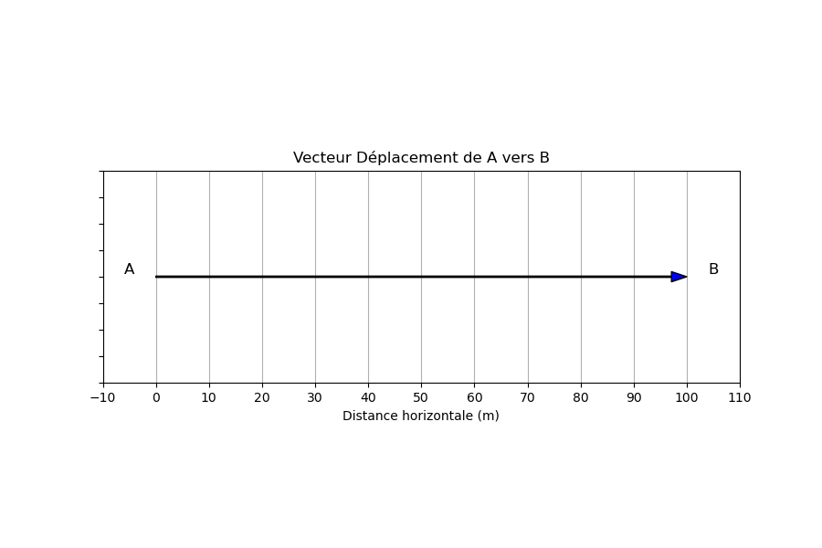
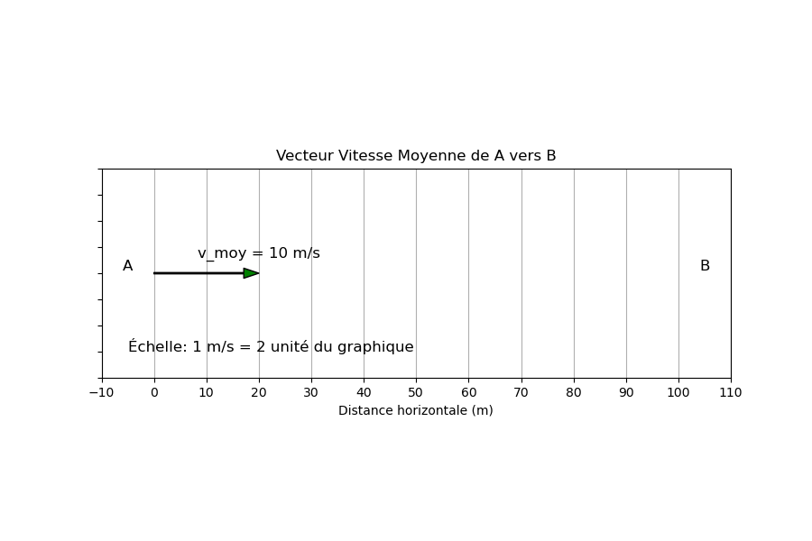
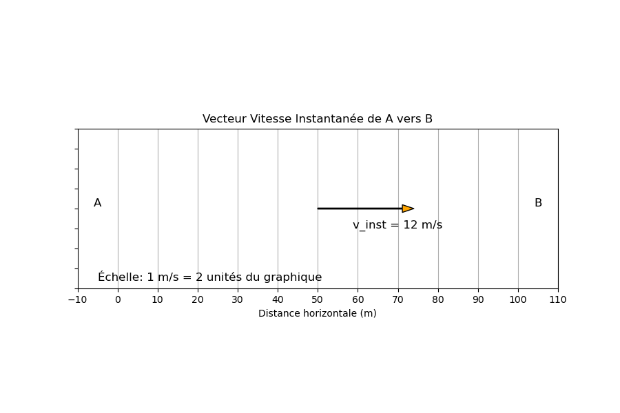
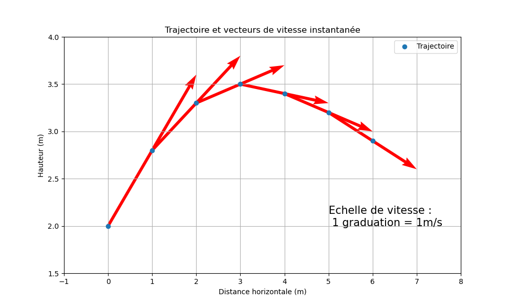

Choisissez l'échelle spatiale et temporelle appropriée pour décrire le mouvement du système dans chacune des situations suivantes et justifiez votre réponse.
Pour chacune des situations suivantes, choisissez le référentiel le plus approprié pour décrire le mouvement du système et justifiez votre choix.
Considérez une roue de vélo qui roule sans glisser sur une surface plane. Cette roue effectue à la fois un mouvement de translation (déplacement en ligne droite) et de rotation (tourne autour de son axe).
Analysez la trajectoire de deux points différents de la roue pour comprendre comment le choix du point affecte la description du mouvement.
Objectif : Cet exercice a pour but de clarifier la différence entre le vecteur déplacement, le vecteur vitesse moyenne et le vecteur vitesse instantanée d'un point en mouvement.
Prérequis : Assurez-vous de comprendre la notion de vecteur, qui est une quantité caractérisée par une magnitude (ou norme), une direction, un sens et un point d'application.
Imaginez un coureur qui parcourt une distance de 100 mètres en ligne droite de A (point de départ) à B (point d'arrivée). Il réalise cette distance en 10 secondes. À mi-chemin, sa vitesse instantanée est enregistrée à 12 m/s par un radar.
La correction suivante contient les illustrations qui représentent les différents vecteurs étudiés.
Partie 1 : Vecteur Déplacement de A vers B
Partie 2 : Vecteur Vitesse Moyenne de A vers B
Partie 3 : Vecteur Vitesse Instantanée de A vers B
Le mouvement du coureur n'est pas uniforme car sa vitesse moyenne est différente de sa vitesse instantanée a mi chemin. Il y a surement une phase d'accélération au début et une phase de décélération à la fin. En tout cas la vitesse n'est pas constante sur l'entièreté du parcours
Objectif : Analyser en détail un tir à trois points au basketball, en mettant l'accent sur le choix du référentiel, la trajectoire, le point du système à étudier, et la représentation des vecteurs de vitesse instantanée.
Prérequis : Compréhension des notions de trajectoire, de vecteurs, de référentiel en physique, et des connaissances de base en programmation Python (pour la partie avancée).
Choisissez un référentiel approprié pour l'analyse du tir et discutez de la pertinence de ce choix. Déterminez également quel point du ballon (centre, surface, etc.) serait le plus judicieux à étudier pour comprendre le mouvement.
Utilisez les coordonnées suivantes pour tracer manuellement la trajectoire du ballon et représentez les vecteurs de vitesse instantanée pour chaque point. Précisez l'échelle choisie (par exemple, "1 cm représente 1 m/s").
| t (s) | x (m) | y (m) |
|---|---|---|
| 0 | 0 | 2 |
| 0.5 | 1 | 2.8 |
| 1.0 | 2 | 3.3 |
| 1.5 | 3 | 3.5 |
| 2.0 | 4 | 3.4 |
| 2.5 | 5 | 3.2 |
| 3.0 | 6 | 2.9 |
Analysez comment les vecteurs de vitesse instantanée aident à comprendre le mouvement du ballon. Discutez de la manière dont ces vecteurs complètent l'information fournie par la trajectoire seule.
En tant que défi supplémentaire, les élèves qui le souhaitent peuvent refaire l'exercice en utilisant Python pour tracer la trajectoire et calculer les vecteurs de vitesse instantanée. Cette partie est recommandée pour les élèves à l'aise avec la programmation.
Le référentiel choisi est le référentiel terrestre, avec le panier comme point de référence. Le point le plus judicieux du ballon à étudier est son centre, car cela simplifie l'analyse en évitant de tenir compte de la rotation du ballon.
L'image ci-dessous montre la trajectoire et les vecteurs de vitesse instantanée du tir à trois points. Les vecteurs rouges représentent la vitesse et la direction du ballon à différents instants, illustrant clairement la dynamique du mouvement.
